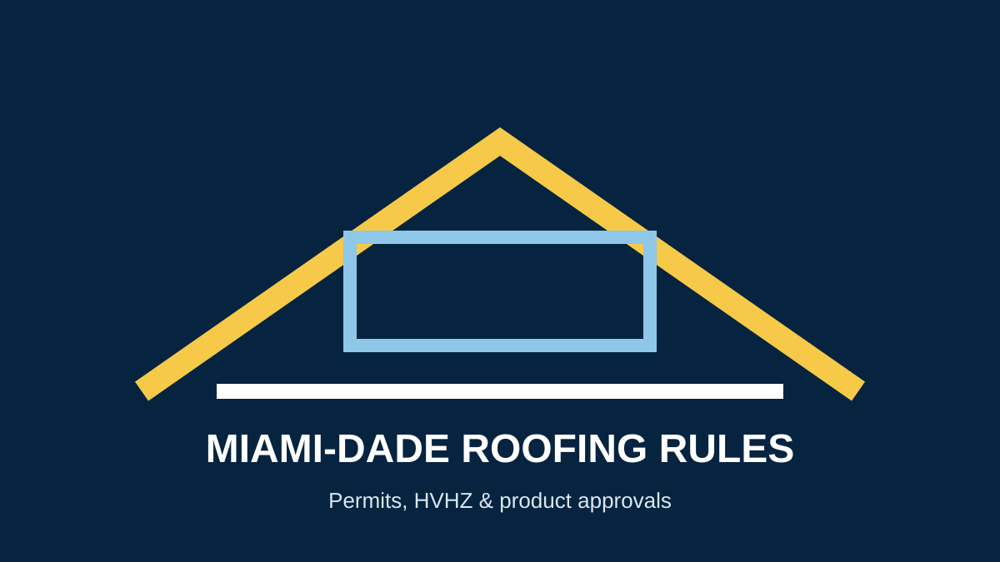

Miami-Dade Roofing Requirements: Permits, HVHZ and Product Approval
If you are searching for Miami-Dade roofing requirements, start with the county and Florida Building Code rather than an outdated contractor checklist. Miami-Dade publishes dedicated roofing permit forms and product-approval resources because roofing systems must meet applicable local and state requirements.
Do I need a permit for roof work?
Miami-Dade County provides a roofing permit process and states that a Uniform Roofing Permit Application is required for roofing permits. The county also publishes HVHZ roof forms covering different systems, including shingle, metal and tile roofing.
See the official Miami-Dade Roofing Permits page for current forms and instructions.
What is HVHZ?
HVHZ means High-Velocity Hurricane Zone. Miami-Dade's building and product-control resources include specific requirements and approved assemblies intended for the local high-wind environment. Product Control maintains a searchable database of approved products and systems.
Search Miami-Dade product approvals.
Why product approval matters
A roofing proposal should identify the roof assembly and products being used. Miami-Dade's Product Control Section reviews building-envelope products and systems, including roofing, and maintains approval records.
What homeowners should ask a roofing contractor
- What permit applies to my project and who will obtain it?
- Which roof system and product approvals are being proposed?
- What inspections are required?
- Does the proposed assembly meet the current applicable code?
- What work is included in the written scope?
Code changes can happen
Building requirements are updated over time. The Florida Building Commission currently publishes resources for the 2026 9th Edition as well as the 2023 8th Edition and related supplements. Always verify the current code and local requirements before construction.
Florida Building Commission code resources.
Important note
This article is general information, not legal or code advice. Requirements can vary by municipality, property, project scope and the code edition in effect when work is permitted. Confirm the current requirements with the applicable building department.
Discuss Your Roofing Project →Frequently asked questions
What is a Miami-Dade NOA?
A Notice of Acceptance is part of Miami-Dade's product approval system for qualifying construction products and systems. Use the county's Product Approval Search to verify current approval information.
Are shingle and tile roofs covered by the same permit form?
Miami-Dade publishes system-specific HVHZ roof forms, including separate forms for shingle and tile systems.
Who should I contact about a permit?
Use Miami-Dade County's official permitting resources for current instructions and the building department serving the property.
Sources
- Miami-Dade County — Roofing Permits
- Miami-Dade County — Roof Permit Forms
- Miami-Dade County — Product Approval
- Florida Building Commission — Code Resources
Related Miami roofing guides
Roof replacement · Roof repair · Roof inspection · Roof replacement cost